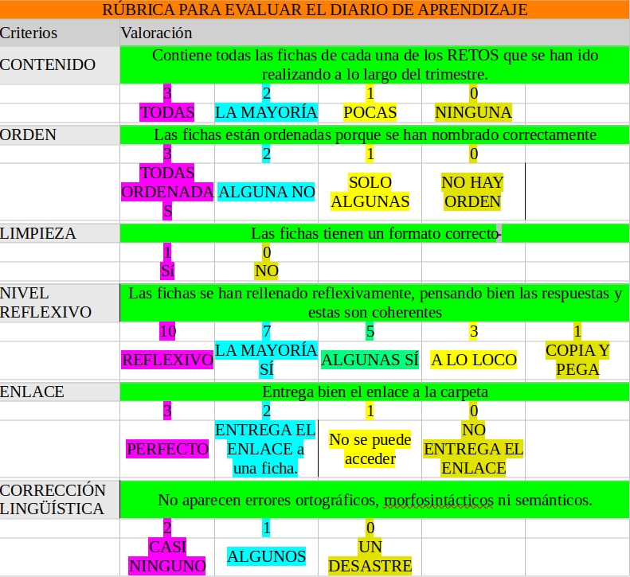

Producto Final y Evaluación
Comprueba que has realizado todas las tareas.
Tu profe comprobará que:
1. Has jugado a CodyRoby en clase de manera educada y participativa.
2. Te has divertido y aprendido sobre lo que significa programar.
3. Has compartido eficazmente y entregado el enlace a tu carpeta de Diario de Aprendizaje y en ella se encuentra rellena la ficha correspondiente al reto propuesto rellena y con el nombre apropiado.

4. Has realizado el resto de actividades de PC Desconectado propuestas por tu profe en clase y has aprendido el significado de las palabras: Algoritmo, Código, Depurar, Función, Parámetros y Variable.
Si has tenido algun problema durante la realización de estas actividades siempre puedes preguntar las dudas al profe o a algún compañero/a.
No obstante, recuerda siempre leer bien las instrucciones de las tareas y comprobar que lo tienes todo antes de entregarlas.